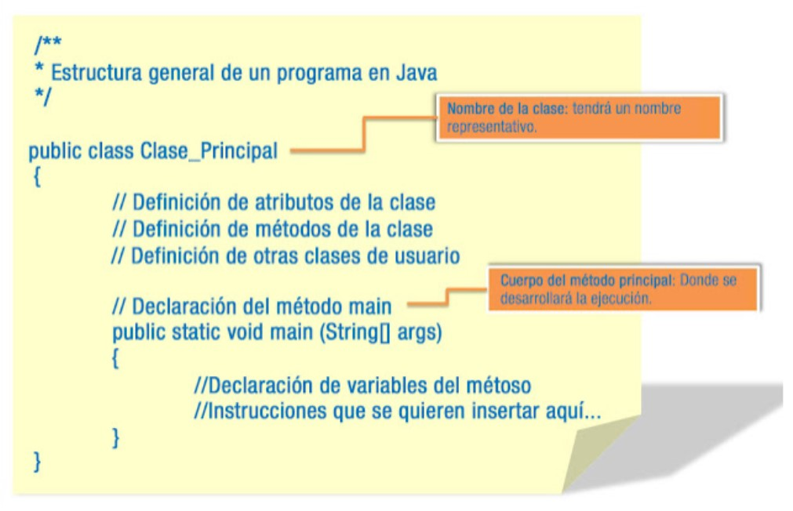

Programas en Java
Hasta ahora, hemos descrito el lenguaje de programación Java, hemos hecho un recorrido por su historia y nos hemos instruido sobre su filosofía de trabajo, pero te preguntarás:
- ¿Cuándo empezamos a desarrollar programas?
- ¿Qué elementos forman parte de un programa en Java?
- ¿Qué se necesita para programar en este lenguaje?
- ¿Podemos crear programas de diferente tipo?
No te impacientes, cada vez estamos más cerca de comenzar la experiencia con el lenguaje de programación Java. Iniciaremos nuestro camino conociendo cuáles son los elementos básicos de un programa Java, la forma en que debemos escribir el código y los tipos de aplicaciones que pueden crearse en este lenguaje.
1. Estructura de un programa
En el gráfico al que puedes acceder a continuación, se presenta la estructura general de un programa realizado en un lenguaje orientado a objetos como es Java.
Vamos a analizar los elementos que aparecen en esa estructura:
- public class ClasePrincipal: todos los programas han de incluir elemento como éste. Podrá llamarse ClasePrincipal, ProgramaPrincipal, ClaseDePruebas, ProgramaDePruebas, Programa01 o como queramos. Pero debe tener un nombre. Se trata de una clase general en la que se incluyen todos los demás elementos del programa. En unidades posteriores veremos qué es una clase y cuáles son sus componentes principales. Por ahora es suficiente con que sepamos que nuestro programa va a comenzar con las líneas
public class NombrePrograma, donde NombrePrograma será el nombre de nuestro programa. - Dentro de este elemento principal observamos el método o función main(): que contiene las líneas de código de nuestro programa. También veremos más adelante qué es un método. Baste por ahora saber que, al igual que en el caso anterior, nuestro programa debe contener también esas líneas
public static void main (String args[]). Aquí dentro se podrán incluir las instrucciones que estimemos oportunas para la ejecución del programa.
Ten en cuenta que Java distingue entre mayúsculas y minúsculas. Si le das a la clase principal el nombre PrimerPrograma, el archivo .java tendrá como identificador PrimerPrograma.java, que es totalmente diferente a primerprograma.java. Además, para Java los elementos PrimerPrograma y primerprograma serían considerados dos clases diferentes dentro del código fuente.
Más adelante hablaremos de las convenciones que suelen seguirse para formar los nombres de las clases en Java, así como de cualquier otro identificador usado por el lenguaje.
- Comentarios: los comentarios se suelen incluir en el código fuente para realizar aclaraciones, anotaciones o cualquier otra indicación que el programador estime oportuna. Estos comentarios pueden introducirse de dos formas:
- Con
//estaríamos estableciendo una única línea completa de comentario, es decir, todo lo que hay detrás, hasta que haya un salto de línea, es comentario. - Con
/* */. De esta forma con/*comenzaríamos el comentario y éste no terminaría hasta que no insertáramos*/.
- Con
- Bloques de código: son conjuntos de instrucciones que se marcan mediante la apertura y cierre de llaves
{ }. El código así marcado es considerado interno al bloque. - Punto y coma (;): aunque en el ejemplo de la imagen no hemos terminado ninguna línea de código con punto y coma, para no distraer de momento con los detalles, hay que hacer hincapié en que cada línea de código ha de terminar con punto y coma (
;). En caso de no hacerlo, tendremos errores sintácticos.
2. El entorno básico de desarrollo Java
Ya conoces cómo es la estructura de un programa en Java, pero, ¿qué necesitamos para llevarlo a la práctica?
La herramienta básica para empezar a desarrollar aplicaciones en Java es el JDK (Java Development Kit o Kit de Desarrollo Java), que incluye un compilador y un intérprete para línea de comandos. Estos dos programas son los empleados en la precompilación e interpretación del código.
Como veremos, existen diferentes entornos para la creación de programas en Java que incluyen multitud de herramientas, pero por ahora nos centraremos en el entorno más básico, extendido y gratuito, el Java Development Kit (JDK). JDK es un entorno de desarrollo para construir aplicaciones, applets y componentes utilizando el lenguaje de programación Java. Incluye herramientas útiles para el desarrollo y prueba de programas escritos en Java y ejecutados en la Plataforma Java.
Así mismo, junto a JDK se incluye una implementación del entorno de ejecución Java, el JRE (Java Runtime Environment) para ser utilizado por el JDK. El JRE incluye la Máquina Virtual de Java (MVJ ó JVM – Java Virtual Machine), bibliotecas de clases y otros ficheros que soportan la ejecución de programas escritos en el lenguaje de programación Java.
Java fue creado por Sun Microsystems, posteriormente absorbida por Oracle, que ha ido lanzando las sucesivas versiones del JDK. Con el lanzamiento de Java 11 Oracle hizo un cambio de licencia de modo que se convirtió en una tecnología de pago en caso de usarlo en ciertas circunstancias. Podemos usar el JDK de Oracle o bien otras implementaciones abiertas, en nuestro caso trabajaremos con la implementación que vemos a continuación.
Para descargar e instalar el JDK iremos a www.oracle.com/es/java/technologies/downloads/
Para poder desarrollar nuestros primeros programas en Java sólo necesitaremos un editor de texto plano y los elementos que acabamos de instalar a través de Java SE.
3. La API de Java
Junto con el kit de desarrollo que hemos descargado e instalado anteriormente, vienen incluidas gratuitamente todas las bibliotecas de la API (Application Programming Interface – Interfaz de programación de aplicaciones) de Java, es lo que se conoce como Bibliotecas de Clases Java. Este conjunto de bibliotecas proporciona al programador paquetes de clases útiles para la realización de múltiples tareas dentro de un programa. Está organizada en paquetes lógicos, donde cada paquete contiene un conjunto de clases relacionadas semánticamente.
En décadas pasadas una biblioteca era un conjunto de programas que contenían cientos de rutinas (una rutina es un procedimiento o función bien verificados, en determinado lenguaje de programación). Las rutinas de biblioteca manejaban las tareas que todos o casi todos los programas necesitaban. El programador podía recurrir a esta biblioteca para desarrollar programas con rapidez.
Una biblioteca de clases es un conjunto de clases de programación orientada a objetos. Esas clases contienen métodos que son útiles para los programadores. En el caso de Java cuando descargamos el JDK obtenemos la biblioteca de clases API. Utilizar las clases y métodos de las API de Java reduce el tiempo de desarrollo de los programas. También, existen diversas bibliotecas de clases desarrolladas por terceros que contienen componentes reutilizables de software, y están disponibles a través de la Web.
| Componente | Descripción |
|---|---|
| JDK | Kit de Desarrollo Java, incluye compilador e intérprete. |
| JRE | Entorno de Ejecución Java, soporta la ejecución de programas. |
| API de Java | Bibliotecas de clases para tareas comunes. |
4. Afinando la configuración
¿Y es necesario configurar la instalación del JDK que acabamos de hacer?
Para que podamos compilar y ejecutar ficheros Java es necesario que realicemos unos pequeños ajustes en la configuración del sistema. Vamos a indicarle dónde encontrar los ficheros necesarios para realizar las labores de compilación y ejecución, en este caso javac.exe y java.exe, así como las librerías contenidas en la API de Java y las clases del usuario.
La variable PATH: como aún no disponemos de un IDE (Integrated Development Environment - Entorno Integrado de Desarrollo) la única forma de ejecutar programas es a través de línea de comandos. Pero sólo podremos ejecutar programas directamente si la ruta hacia ellos está indicada en la variable PATH del ordenador. Es necesario que incluyamos la ruta hacia estos programas en nuestra variable PATH. Esta ruta será el lugar donde se instaló el JDK hasta su directorio bin.
Si has instalado AdoptJDK, no tienes que hacer nada. Si no fuera así, tendrías que indicar dónde está instalado Java. Por ejemplo, así se haría si se tuviera instalado jdk 8 de Oracle.
La variable CLASSPATH: esta variable de entorno establece dónde buscar las clases o bibliotecas de la API de Java, así como las clases creadas por el usuario. Es decir, los ficheros .class que se obtienen una vez compilado el código fuente de un programa escrito en Java. Es posible que en dicha ruta existan directorios y ficheros comprimidos en los formatos zip o jar que pueden ser utilizados directamente por el JDK, conteniendo en su interior archivos con extensión class.
(Por ejemplo: C:\Program Files\AdoptOpenJDK\jdk-11.0.7.10-hotspot\bin)
Si no existe la variable CLASSPATH debes crearla, para modificar su contenido sigue el mismo método que hemos empleado para la modificación del valor de la variable PATH, anteriormente descrito. Ten en cuenta que la ruta que debes incluir será el lugar donde se instaló el JDK hasta su directorio lib.
(Por ejemplo: C:\Program Files\AdoptOpenJDK\jdk-11.0.7.10-hotspot\lib)
5. Codificación, compilación y ejecución de aplicaciones
Una vez que la configuración del entorno Java está completada y tenemos el código fuente de nuestro programa escrito en un archivo con extensión .java, la compilación de aplicaciones se realiza mediante el programa javac incluido en el software de desarrollo de Java.
Para llevar a cabo la compilación desde la línea de comandos, escribiremos:
Donde javac es el compilador de Java y archivo.java es nuestro código fuente.
El resultado de la compilación será un archivo con el mismo nombre que el archivo Java pero con la extensión .class. Esto ya es el archivo con el código en forma de bytecode, es decir, con el código precompilado. Si en el código fuente de nuestro programa figuraran más de una clase, veremos cómo al realizar la compilación se generarán tantos archivos con extensión .class como clases tengamos. Además, si estas clases tenían método main() podremos ejecutar dichos archivos por separado para ver el funcionamiento de dichas clases.
Para que el programa pueda ser ejecutado, siempre y cuando esté incluido en su interior el método main(), podremos utilizar el intérprete incluido en el kit de desarrollo.
La ejecución de nuestro programa desde la línea de comandos podremos hacerla escribiendo:
Donde java es el intérprete y archivo es el archivo con el código precompilado. Es IMPORTANTE aclarar que donde ponemos archivo, nos referimos al archivo ya precompilado en bytecodes, que tiene la extensión .class, pero NO hay que poner dicha extensión para ejecutar el archivo, sólo el nombre.
6. Tipos de aplicaciones en Java
La versatilidad del lenguaje de programación Java permite al programador crear distintos tipos de aplicaciones. A continuación, describiremos las características más relevantes de cada uno de ellos:
Aplicaciones de consola:
- Son programas independientes al igual que los creados con los lenguajes tradicionales.
- Se componen como mínimo de un archivo .class que debe contar necesariamente con el método main().
- No necesitan un navegador web y se ejecutan cuando invocamos el comando java para iniciar la Máquina Virtual de Java (JVM). De no encontrarse el método main() la aplicación no podrá ejecutarse.
- Las aplicaciones de consola leen y escriben hacia y desde la entrada y salida estándar, sin ninguna interfaz gráfica de usuario.
Aplicaciones gráficas:
- Aquellas que utilizan las clases con capacidades gráficas, como Swing, que es la biblioteca para la interfaz gráfica de usuario avanzada de la plataforma Java SE.
- Incluyen las instrucciones import, que indican al compilador de Java que las clases del paquete javax.swing se incluyan en la compilación.
Applets:
- Son programas incrustados en otras aplicaciones, normalmente una página web que se muestra en un navegador. Cuando el navegador carga una web que contiene un applet, éste se descarga en el navegador web y comienza a ejecutarse. Esto nos permite crear programas que cualquier usuario puede ejecutar con tan solo cargar la página web en su navegador.
- Se pueden descargar de Internet y se observan en un navegador. Los applets se descargan junto con una página HTML desde un servidor web y se ejecutan en la máquina cliente.
- No tienen acceso a partes sensibles (por ejemplo: no pueden escribir archivos), a menos que uno mismo le dé los permisos necesarios en el sistema.
- No tienen un método principal.
- Son multiplataforma y pueden ejecutarse en cualquier navegador que soporte Java.
Servlets:
- Son componentes de la parte del servidor de Java EE, encargados de generar respuestas a las peticiones recibidas de los clientes.
- Los servlets, al contrario de los applets, son programas que están pensados para trabajar en el lado del servidor y desarrollar aplicaciones Web que interactúen con los clientes.
Midlets:
- Son aplicaciones creadas en Java para su ejecución en sistemas de propósito simple o dispositivos móviles. Algunos juegos Java creados para teléfonos móviles son midlets.
- Son programas creados para dispositivos embebidos (se dedican a una sola actividad), más específicamente para la máquina virtual Java Micro Edition (Java ME).
- Generalmente son juegos y aplicaciones que se ejecutan en teléfonos móviles.